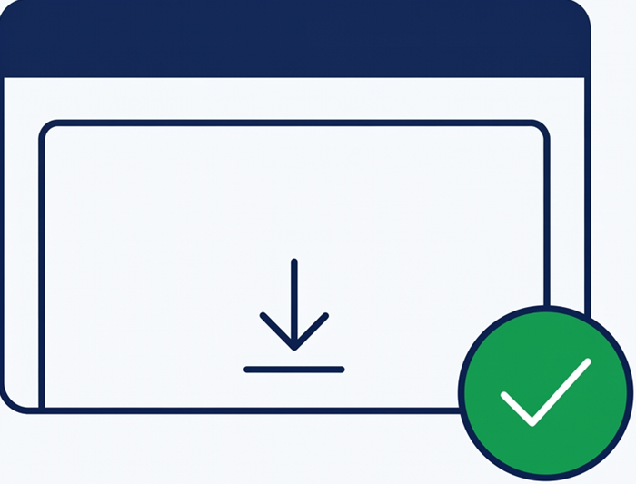

FactuSerein s'installe en quelques minutes. Compatible Windows 10 et Windows 11.

Installez l'application, créez votre compte en quelques étapes guidées (entreprise, justificatif, paiement sécurisé par virement) — nous nous occupons du reste.
Installeur Windows 64 bits · Windows 10 et 11 · SHA-256 : 05b6d0309805b9804eeb1927915773affd43174dc43bf50b76760ff0d736b828
L'application vous guide : entreprise, justificatif, accord formel, paiement par virement. Vous recevez votre clé de connexion par e-mail.
Un dossier « À envoyer » sur votre ordinateur. Vous déposez vos PDF, nous vérifions et transmettons. Vos factures reçues arrivent dans « Reçues ».
Statuts de transmission, alertes de rejet, carnet de clients : tout est dans l'application, avec un accompagnement humain depuis Aix-en-Provence.